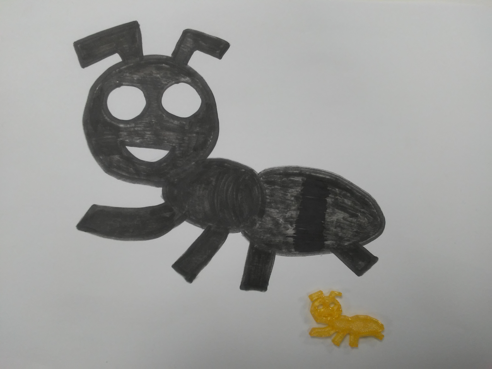
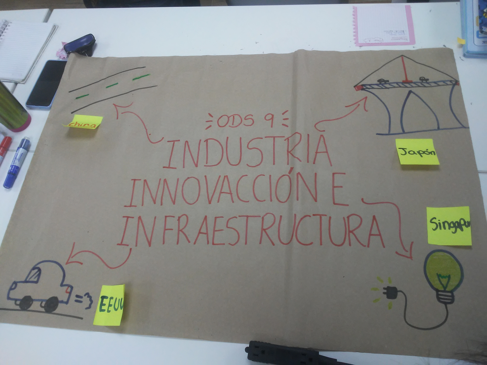

Dinámica 1Lo primero que se hizo, fue juntarnos en grupos y hacer un dibujo que nos representara. Elegimos la hormiga, que representa la fuerza y unión de varios individuos. |
 |
Dinámica 2Otra vez nos juntamos en grupos pero con diferentes integrantes, y se eligió al azar el ODS a trabajar. En nuestro caso el 9, donde defendimos el por qué es necesario por medio de ejemplos. |
 |
Dinámica 3La tercera dinámica se hizo de forma individual. Consistía en crear una idea personal para un producto. En mi caso hice 2. La primera es sobre un llavero que lleva consigo 2 pequeños aparatos que emiten sonido para saber donde dejaste tus cosas. La segunda trata de una pulsera resolviendo una problemática similar a la anterior, puedes grabar audios con las cosas que debes hacer y crear recordatorios para oír tus audios. |
 |